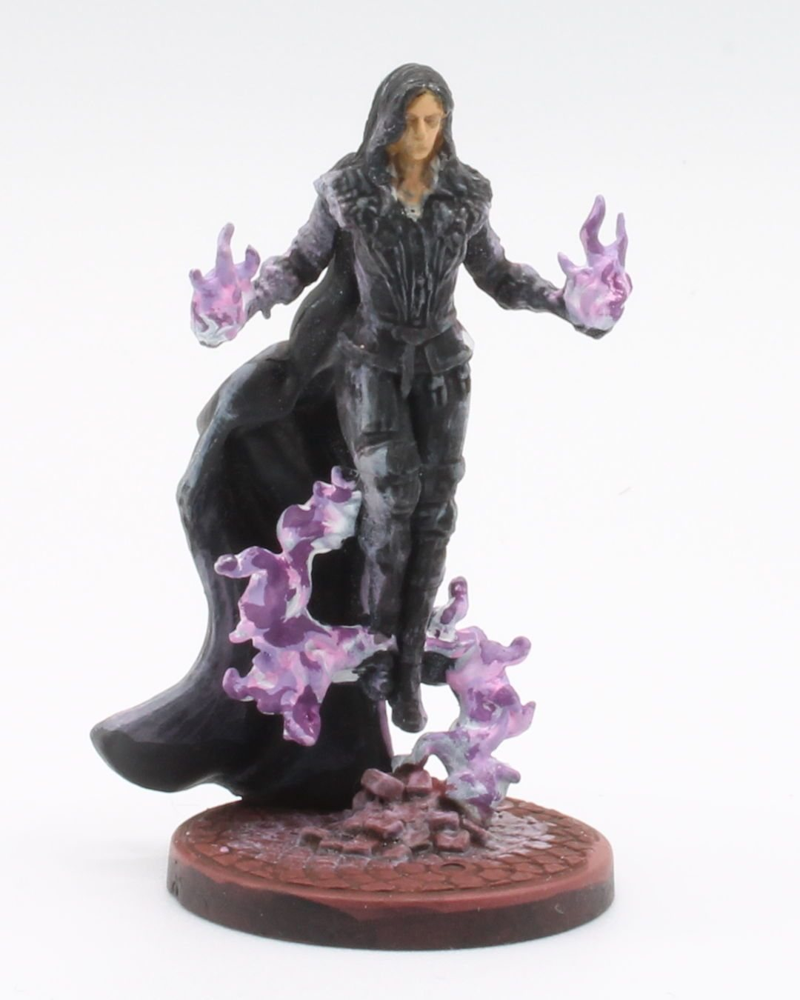
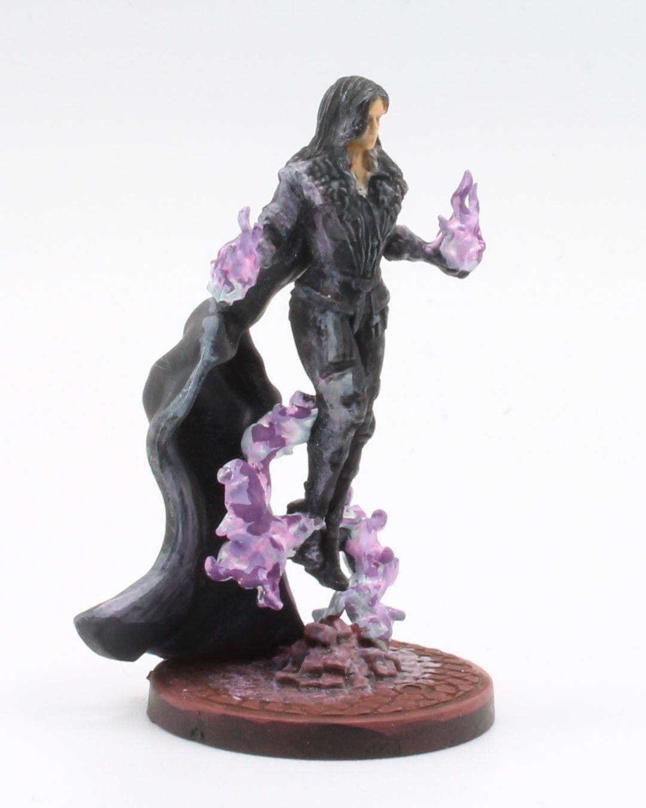
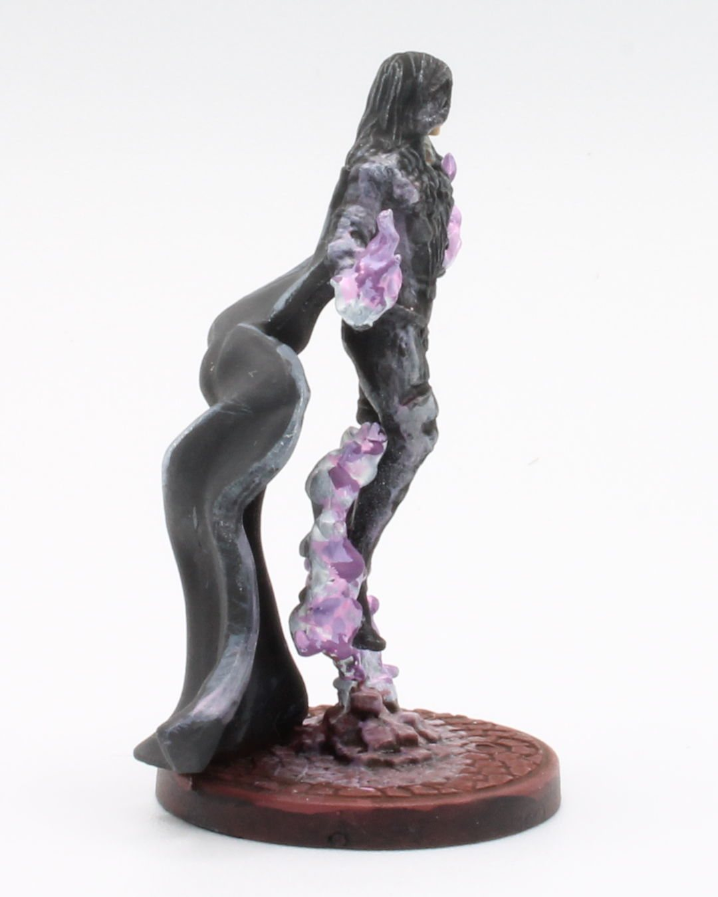
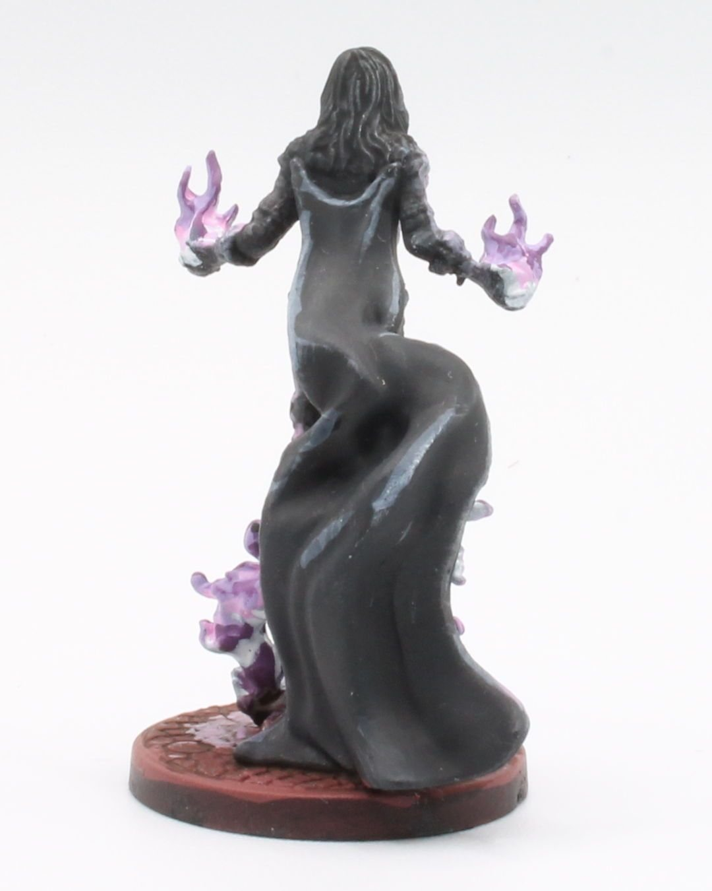
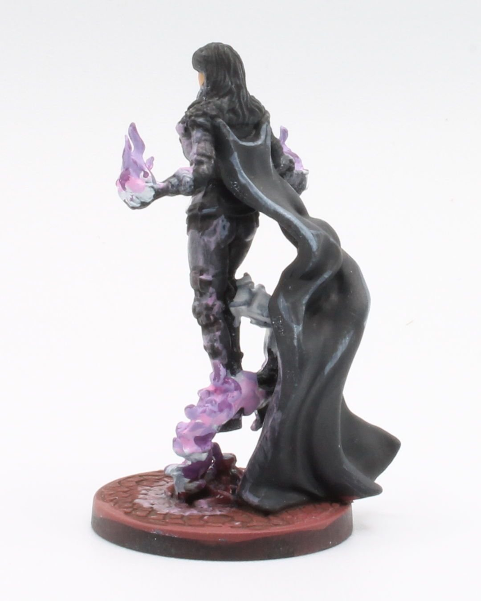
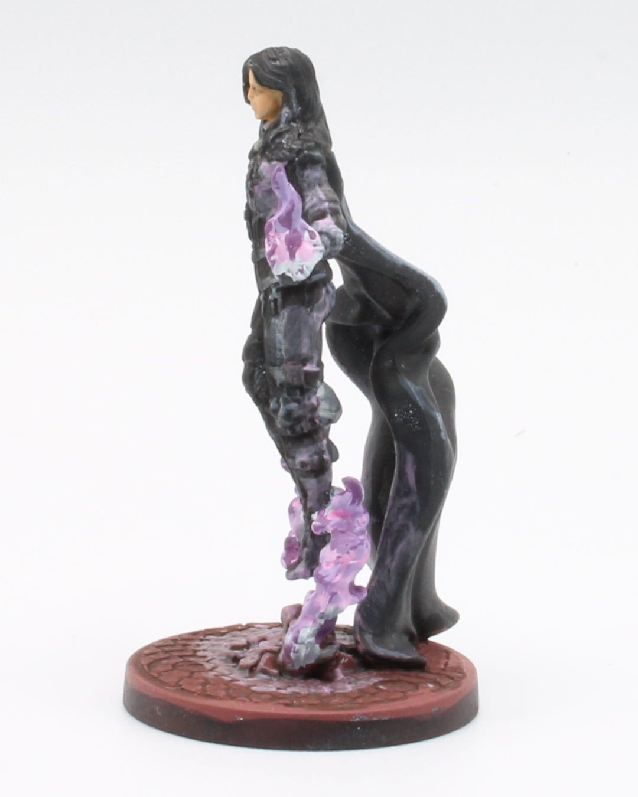
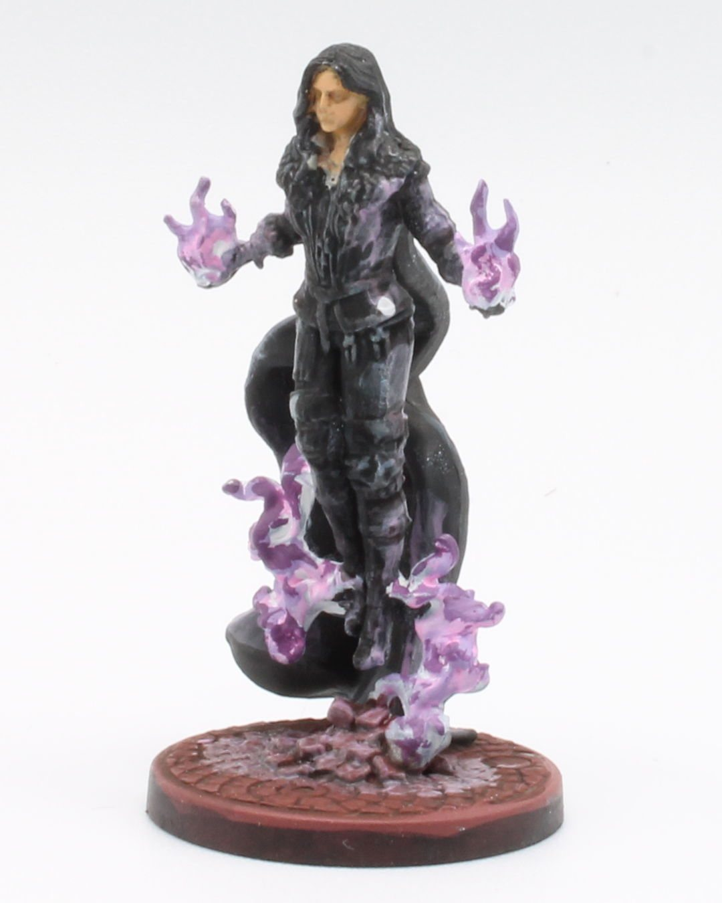

The Witcher May 5, 2025
Yennefer of Vengerberg
Yennefer of Vengerberg— - mysterious, powerful, and unmistakably scented with lilac and gooseberries.
This mini from The Witcher: Path of Destiny was fun to paint, especially the magical aura where I used wet blending to swirl shades of white and deep purple together for her chaos magic. It doesn't hurt that she also wears mostly black.
Hopefully she's a fitting tribute to the most formidable sorceress on the Continent.
#MiniaturePainting #Miniatures #Painting #Art #Hobbies #BoardGames #TheWitcher #PathOfDestiny #Yennefer #TabletopGaming